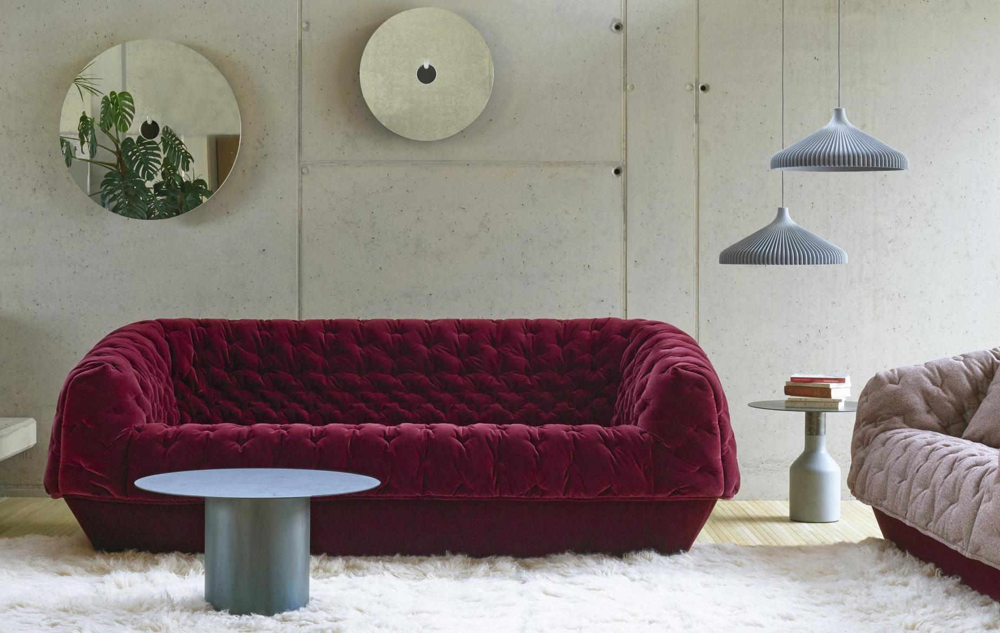
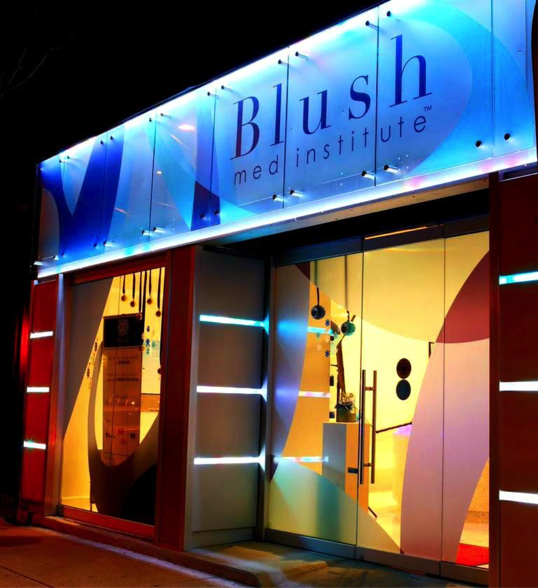

Made in DC
DC is proud of it's small businesses. You'll see this pride reflected in an ongoing campaign called "Made in DC".
DC is proud of it's small businesses. You'll see this pride reflected in an ongoing campaign called "Made in DC".
Known for its artful collaborations with both established and up-and-coming talents in contemporary design, Ligne Roset offers exceptional furniture, home accessories, and lighting for modern living, as well as expert assistance, professional interior design, and space-planning services. Stop by the showroom to view Ligne Roset’s bold and beautiful furniture collections, rugs, textiles, and more.
This brand new women’s boutique opened its flagship store at The Wharf. Find feminine styles with a contemporary edge with brands like Michelle Mason, Tanya Taylor, RtA, Frame Denim, Pamela Love, and more. In addition to clothing, shoes, and accessories, d/eleven carries home goods and gifts.

Blush is the first-ever Health Club for Your Skin. Their revolutionary and rapidly growing skin care concept offers advanced clinical-grade skin care treatments that are approachable, accessible, and, of course, affordable. They believe everyone deserves to have beautiful skin and that your beautiful skin shouldn’t cost a fortune. Visit Blush and start to love the skin you’re in.
Let yourself unwind and get pampered at Bella Moda Salon and Spa. From stylish haircuts and manicures to relaxing massages and expert hair-coloring, the highly talented and friendly staff offers a full range of services to help you look and feel your best.